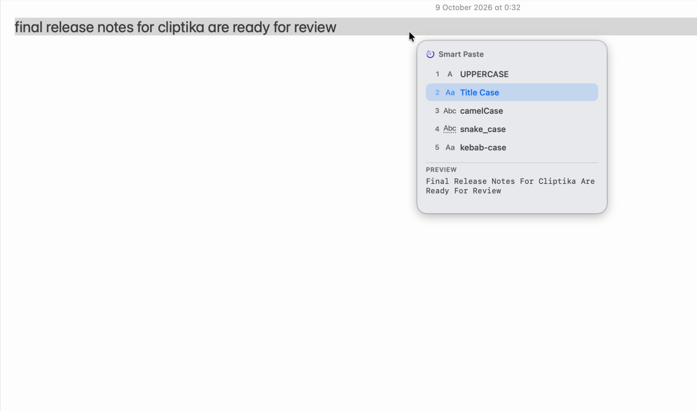
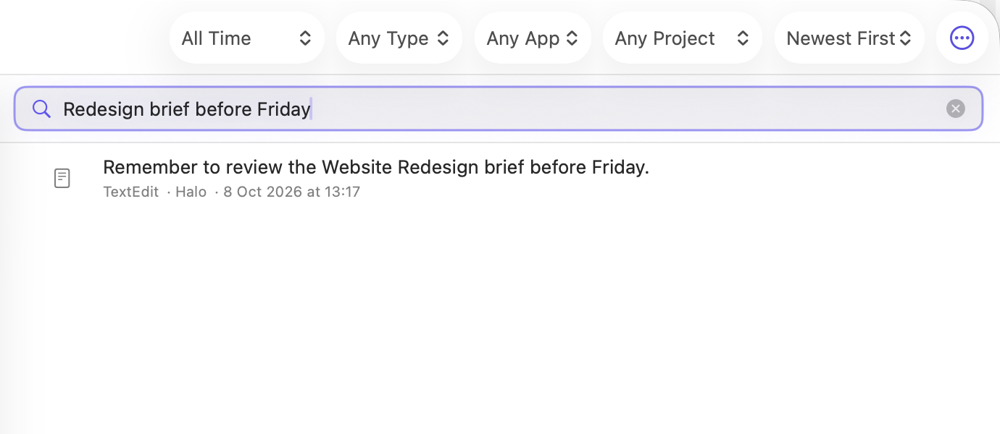
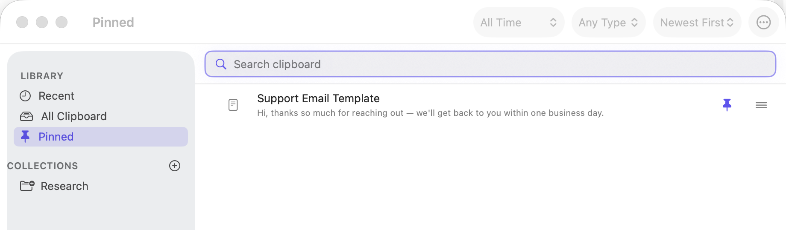

Cliptika for Mac
Your clipboard, upgraded for the way you actually work.
Find what you copied, capture what you see, and act faster with Smart Paste and Cliptika Lens.
Available on the Mac App StoreFree to download · macOS 14.6 or later

Product
Everything within reach.
Five focused ways to make the things you copy, capture, and reuse work harder.
Everything you copy, right where you left it.
Search and reuse text, links, images, and files in seconds — without digging back through old windows or chats.
- Fast, focused history search
- Keep more than plain text close

Copy. Paste. Done — smarter.
Smart Paste offers the actions that make sense for what you just copied, right where you are about to paste.
- Transform text without leaving your flow
- Translate copied text in place
Act on where you are, not just what you copied.
One shortcut brings up the relevant actions for a selected file, folder, or text cursor — all from the keyboard.
- Finder context when you need it
- Quick Insert for dates, times, and recent items
Capture it. Find it. Use it.
Capture part of your screen, then find and reuse the image or its extracted text later.
- Screen capture when it matters
- OCR text you can search again
Capture a detail. Find the text inside it later.
Capture and OCR are current Cliptika features.Keep the important ones close.
Pin the things you want to keep, give them a name, and group them into Collections.
- Save everyday essentials
- Find reusable content anytime

Built to stay out of your way.
Useful when needed. Quiet when not.
Cliptika is free to download.
Clipboard history, Smart Paste, and Cliptika Lens — ready when you are.
No account. No analytics. Your clipboard stays on your Mac.
Read the Privacy Policy →